Bring Jasvir’s lifelong ethic of service to Town Hall: listen, be available, work across levels of government and deliver practical results for safer streets, stronger services, responsible spending and a community where every resident can be heard.
JASVIR FOR CITY COUNCILLOR · WARD 2 · HALTON HILLS
Protect what we love.
Improve what we use every day.
A practical plan for smoother streets, safer neighbourhoods, responsible taxes, better parks and thoughtful growth that protects Halton Hills’ character.
JASVIR
MEET JASVIR
38 years of service. A neighbour ready to keep serving.
I am a mother of two and have proudly called Ward 2 home for the past seven years. I live here with my children, husband and mother-in-law, while running our hobby farm and operating a mental health care home. These roles keep me closely connected to the everyday realities facing families, seniors, farmers and small businesses in our community.
My connection to Ward 2 goes far beyond simply living here. As a parent, farmer, entrepreneur and care provider, I see our community from many perspectives — the needs of young families and local businesses, the importance of supporting seniors, protecting rural life and creating opportunities for the next generation. Those everyday experiences shape the practical, accessible and community-focused leadership I want to bring to Town Council.
Service has been part of my life since I was 14, inspired by my father’s example of creating opportunities for families in need. Over the past 38 years — 30 in Canada and 8 in the UK — I have served through work involving food security, women and children’s welfare, youth programs, seniors, mental health, hospitals, shelters and animal welfare. I remain committed to carrying that spirit of service forward for Ward 2.
Health Sciences · UKLaw · CanadaIT & Language Teaching · EnglandMultilingual Community Interpreter
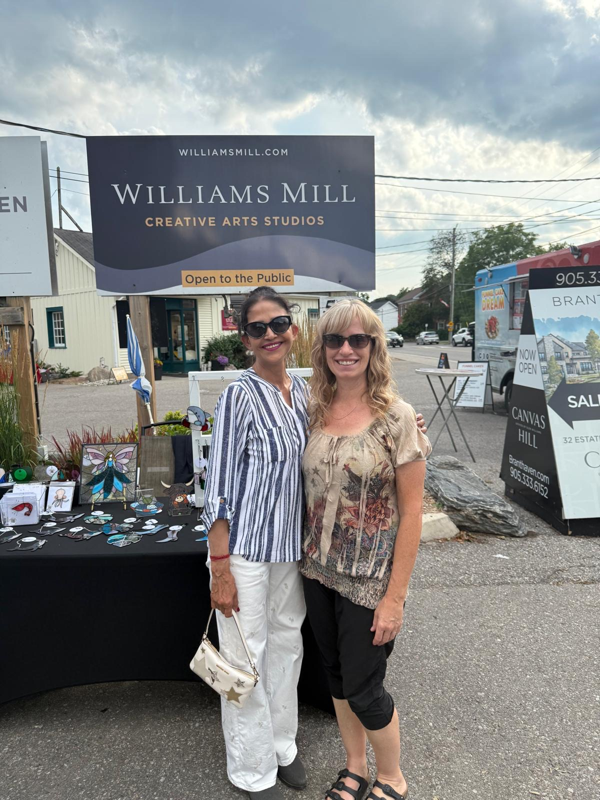
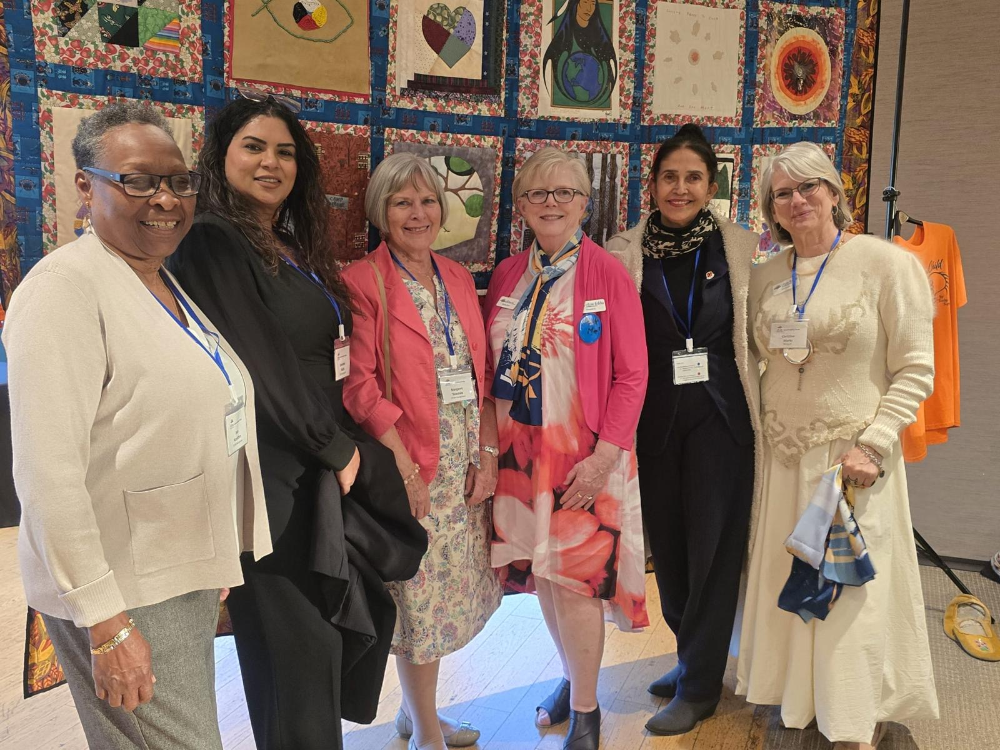
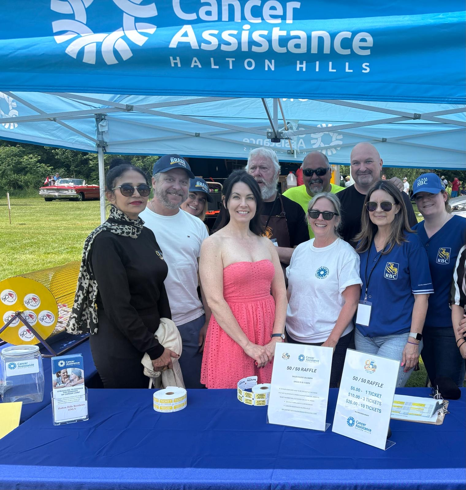
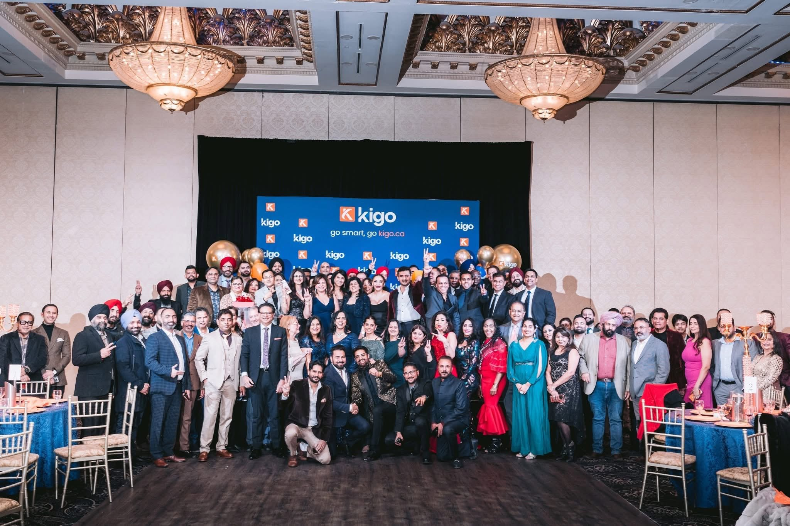
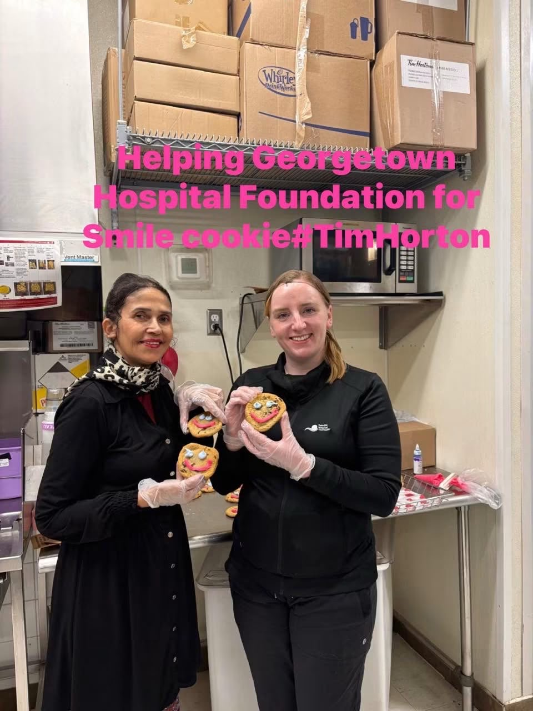
MISSION & VISION
A Halton Hills that works better without losing what makes it special.
A stronger, more self-reliant Halton Hills that protects its hamlets, farms and rural character while investing wisely in families, seniors, youth, recreation, libraries, infrastructure and local opportunity.
OUR COMMUNITY PRIORITIES
Six priorities. One commitment to serve.
Focused on what residents notice on the drive to work, the walk to school, the trip to the park and the property tax bill.
Roads & Infrastructure
Fix roads, improve drainage and invest in reliable rural infrastructure.
Safer Neighbourhoods
Address crime and speeding with prevention, traffic calming and neighbourhood watch.
Recreation & Sports Plex
Champion an all-ages recreation and sports plex with space for youth, families and seniors.
Better Library Services
Strengthen libraries as welcoming hubs for learning, technology, programs and community support.
Seniors & Community Care
Support affordable seniors housing, mental-health resources and services that help people age locally.
Rural Life & Responsible Growth
Protect hamlets and farmland, support local business and spend tax dollars responsibly.

01 · INFRASTRUCTURE
Roads and infrastructure that work
Fix potholes, improve drainage and plan maintenance before small problems become expensive ones. Jasvir will advocate for dependable roads and smart infrastructure investments across Ward 2, including rural areas.
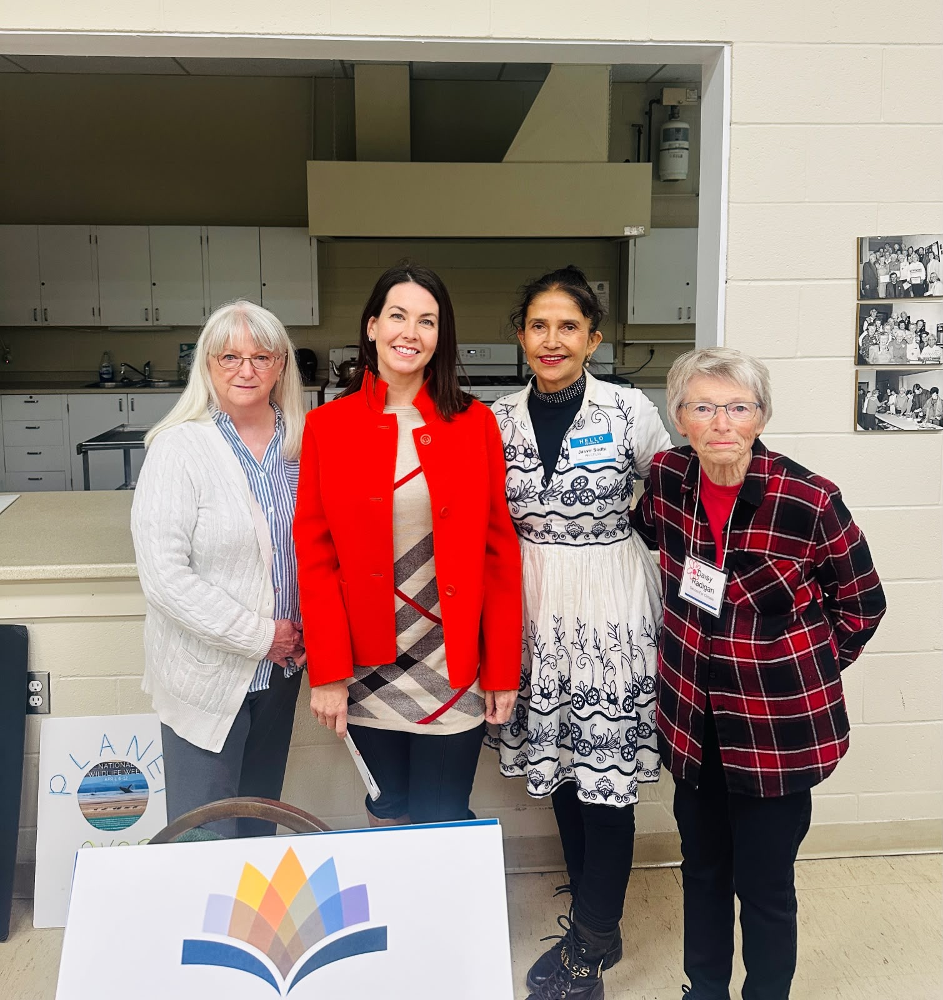
02 · SAFETY
Safer streets and neighbourhoods
Address speeding and crime with practical prevention: safer school and residential zones, better lighting, stronger coordination with police and a community-supported Neighbourhood Watch approach.
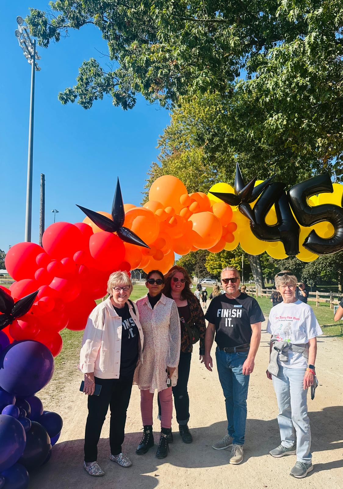
03 · RECREATION
A recreation & sports plex for all ages
Jasvir wants more year-round opportunities for children, youth, adults and seniors to stay active and connected. Her years supporting youth programs and coaching soccer inform her commitment to an inclusive recreation and sports plex that serves the whole community.
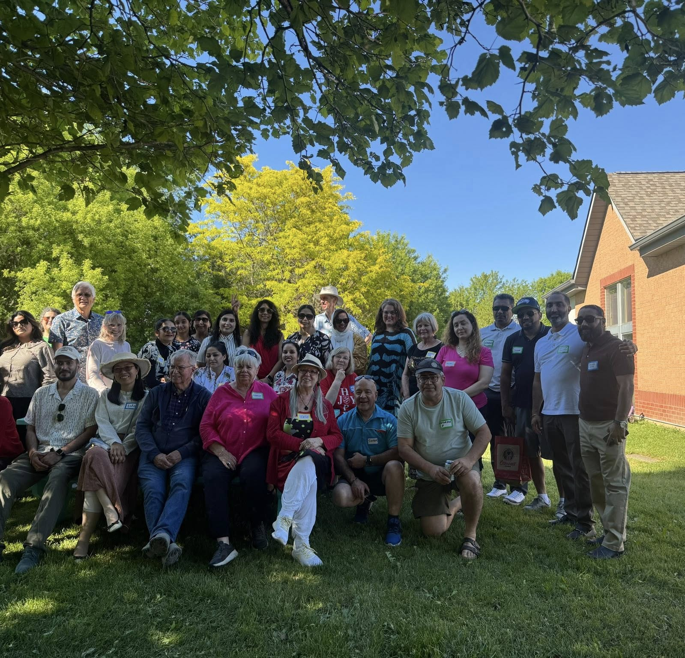
04 · LIBRARIES
Better services in our libraries
Libraries should be strong community hubs — places for reading, technology access, learning, language support, youth programming and services for every generation. Jasvir will advocate for useful programs and resources that reflect how residents use libraries today.
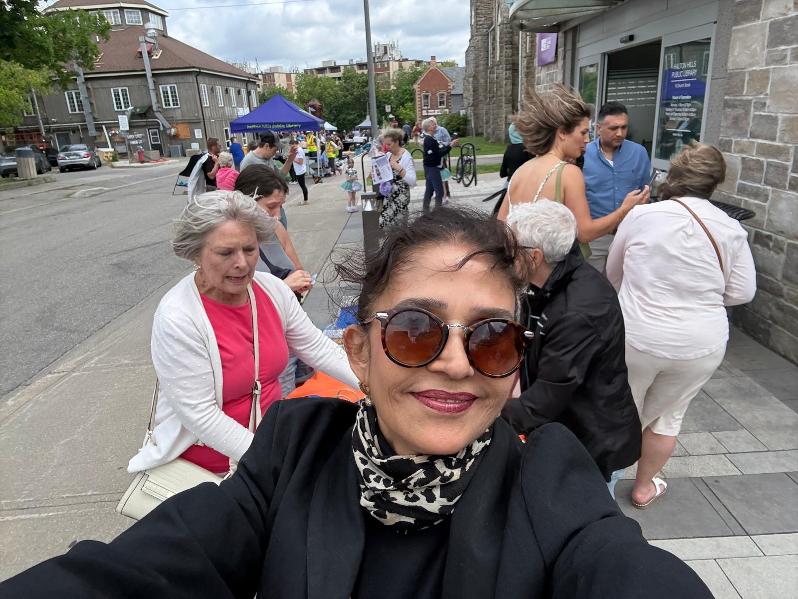
05 · CARE
Support seniors and community wellbeing
With experience in mental-health care and years of service involving seniors, shelters and families, Jasvir will advocate for affordable options to age in our community and stronger connections to the services residents rely on.
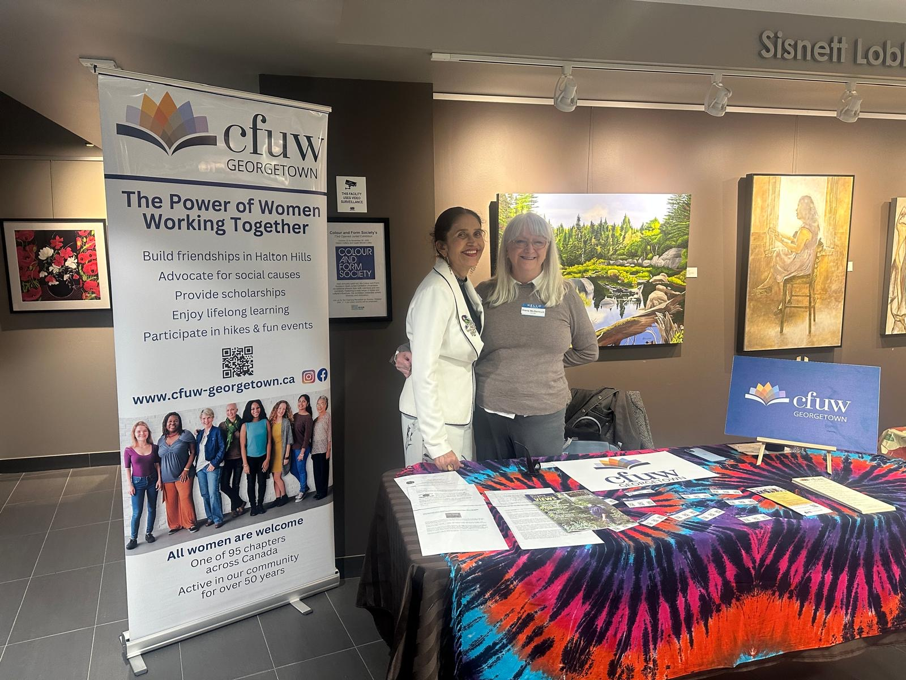
06 · RURAL FUTURE
Protect rural life. Grow responsibly.
As a hobby farmer, entrepreneur and board member with the National Farmers Union of Halton, Jasvir understands the importance of farmland, hamlets and local business. She will push for thoughtful growth, better rural connectivity and responsible use of tax dollars.
Start with what residents are actually experiencing.
Put essential neighbourhood services ahead of distractions.
Communicate clearly and push for visible follow-through.
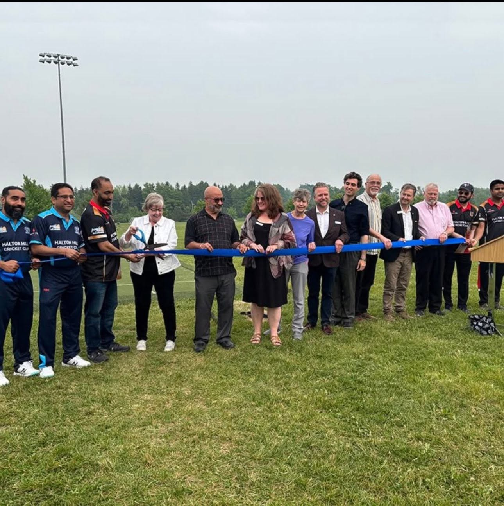
SERVICE THAT CONTINUES TODAY
Leadership means being available when people need help.
For Jasvir, public service is about being a people’s voice, listening to ordinary concerns and following through — not simply being visible at ceremonies.
Her current community involvement includes the National Farmers Union of Halton, CFUW Georgetown, Halton Hills Interfaith Community, North Halton Hospice, Lions Club, the Royal Canadian Legion in Georgetown and continued soccer leadership. She has also worked as an interpreter and translator with schools, police, courts and community services.
Tell Jasvir what matters on your street →38 YearsCommunity service
7 YearsWard 2 resident
Mother · Farmer · EntrepreneurRooted in everyday community life
MultilingualConnecting residents across languages
WARD 2 · HALTON HILLS
Know your ward. Know your voice.
Use the Ward 2 boundary map to confirm your neighbourhood and see the community Jasvir is running to represent.
Open Ward 2 PDFJOIN TEAM JASVIR
Neighbour by neighbour, we can build a stronger Ward 2.
Whether you have an hour, an afternoon or a few weekends, there is a meaningful way to help.
LET'S CONNECT
What would you fix first in Ward 2?
Share a street concern, ask a campaign question, volunteer, or simply introduce yourself.